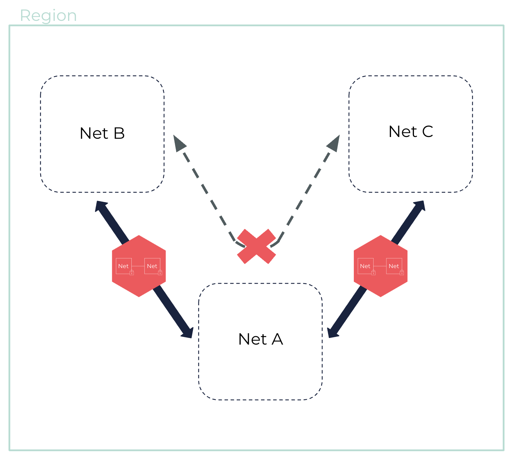
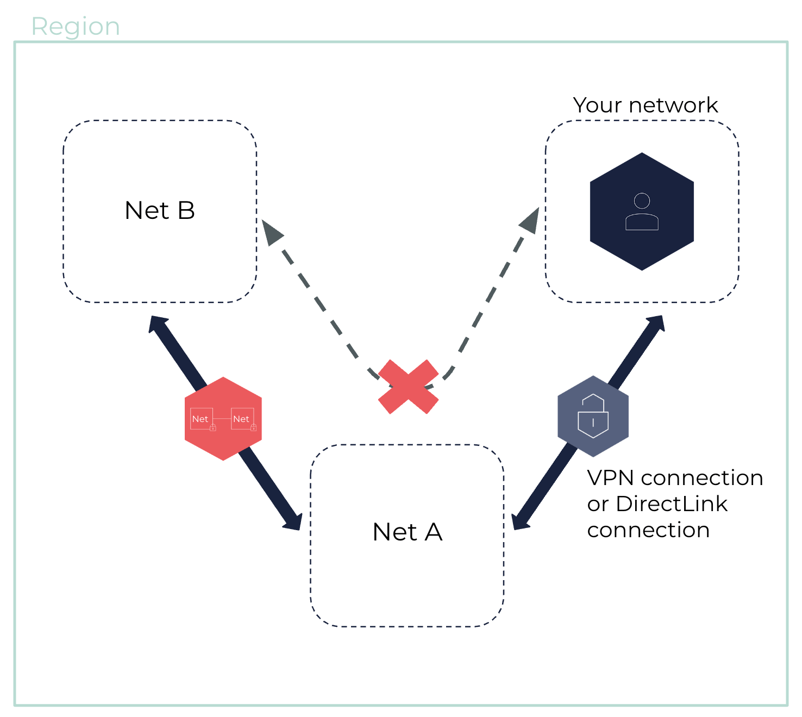
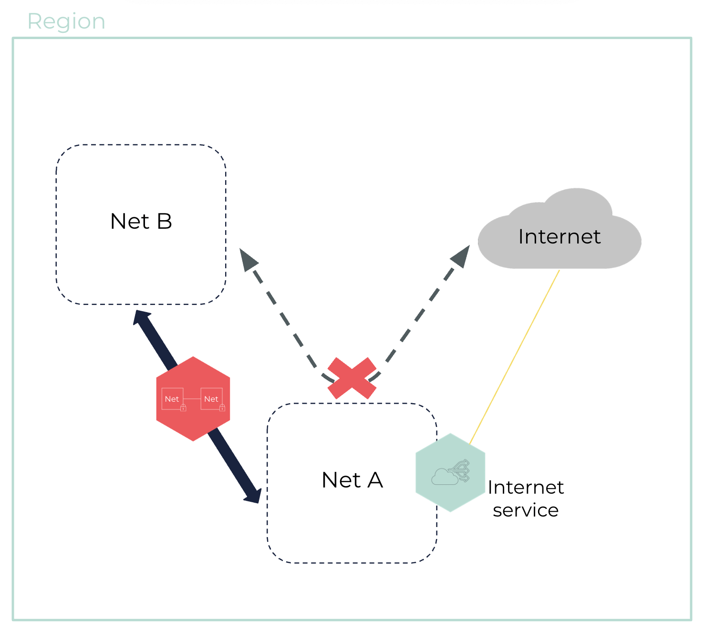

Unsupported Net Peering Configurations
This page presents the Net peering configurations that are not supported on the OUTSCALE Cloud.
Peering with Overlapping CIDR blocks
It is not possible to create a peering connection between Nets that have overlapping CIDR blocks. This impossibility also applies to Nets that have multiple CIDR blocks as long as any of these CIDR blocks overlap.
Peering with a Third Element
Peering with a Third Net
Peered Nets cannot communicate with other Nets they are not directly peered with. That is, if Net B and Net C are each peered with Net A, they cannot use it as a transit point to access each other.

Peering with a VPN Connection or DirectLink Connection
A Net that has a VPN connection or a DirectLink connection cannot extend it to a peered Net. That is, if Net A is peered with Net B and also has a VPN connection or a DirectLink connection, that connection is not extended to Net B.

Peering with an Internet Service
A Net that has an internet service cannot extend it to a peered Net. That is, if Net A has an internet service and Net B does not, the connection between Net A and Net B is not extended to the internet.

Related Pages